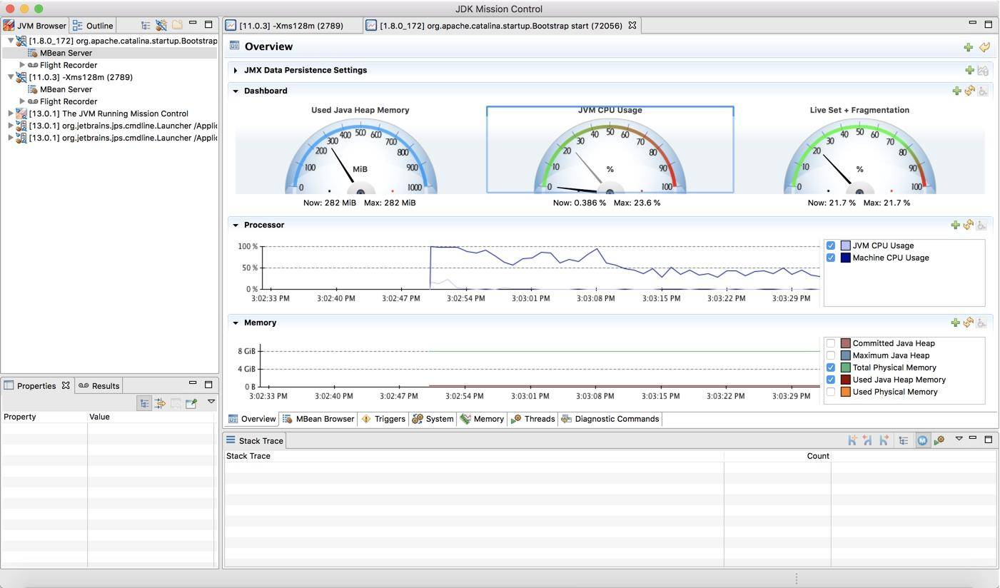
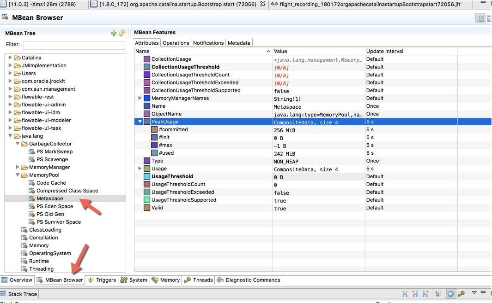
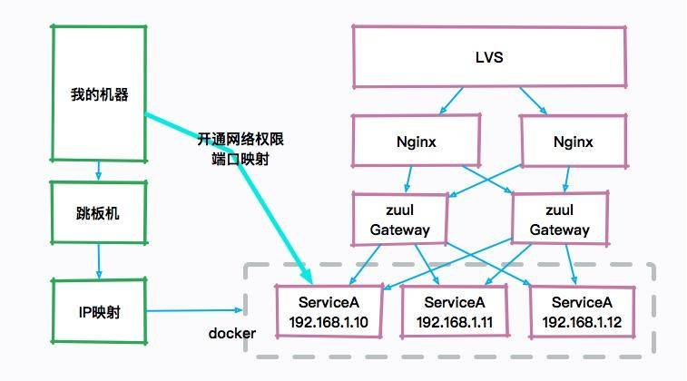
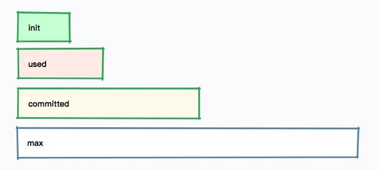
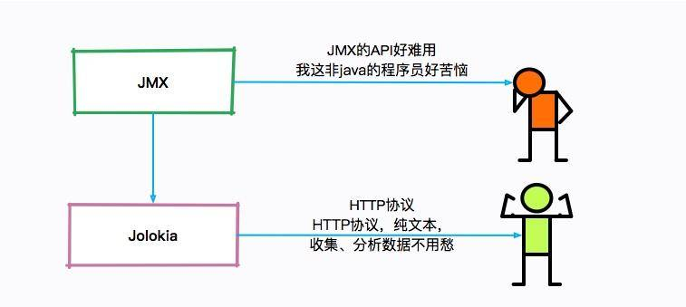
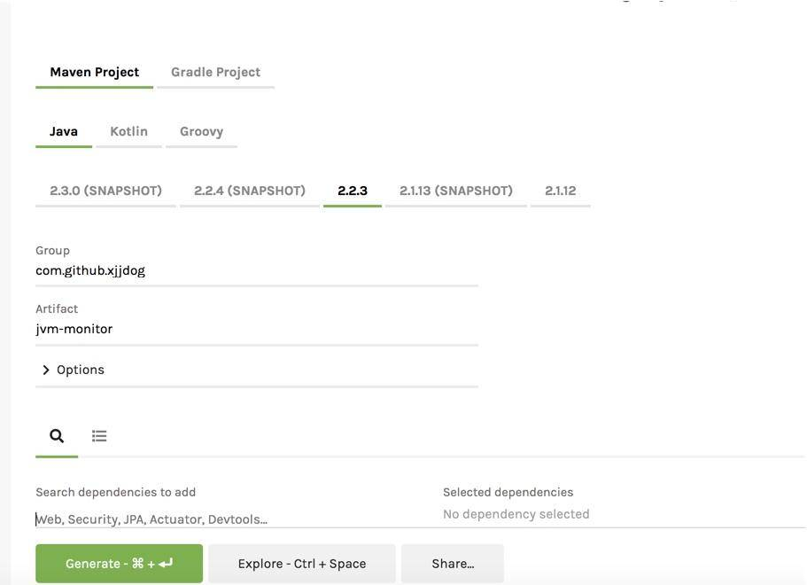
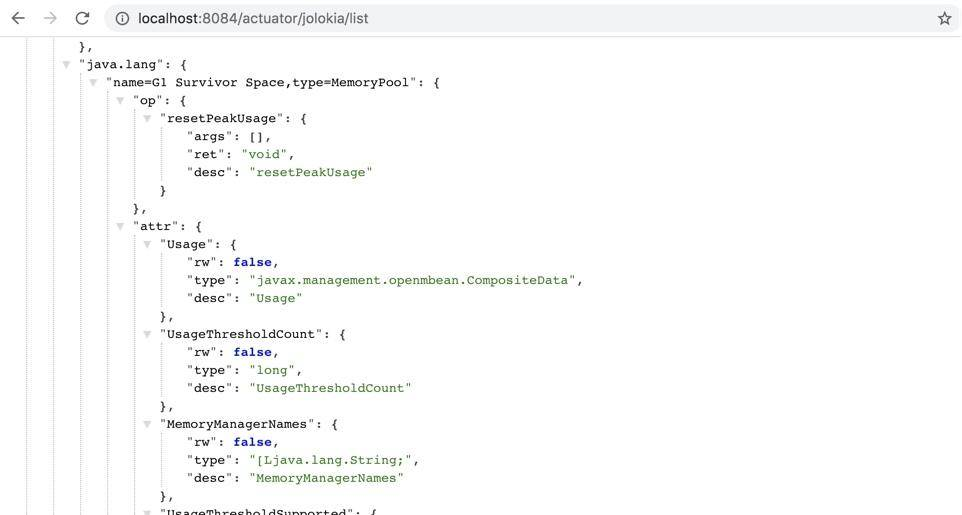
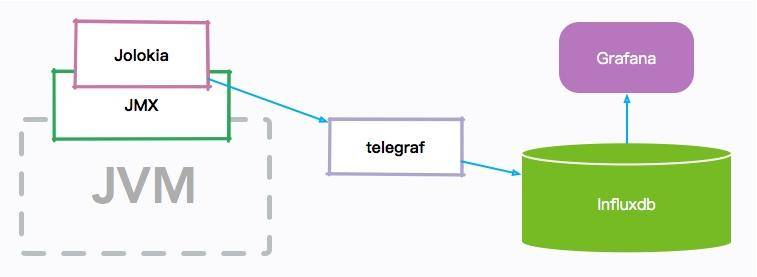
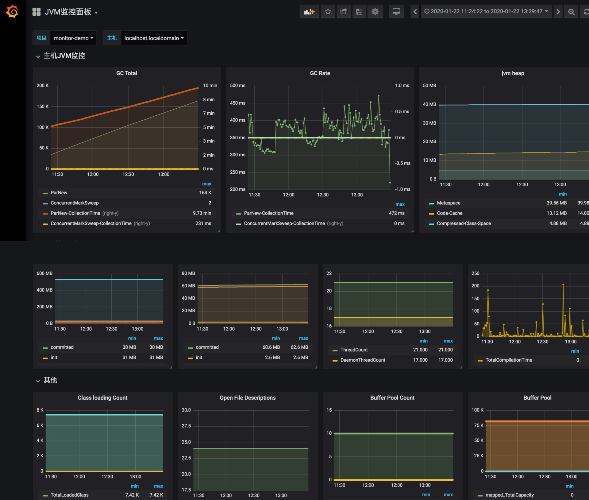
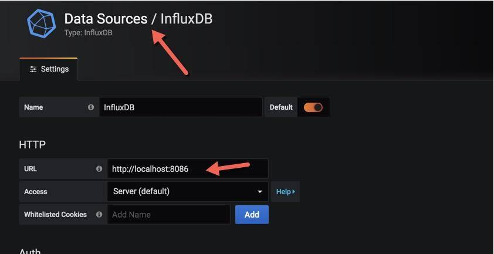

- 00 开篇词：JVM，一块难啃的骨头.md.html
- 01 一探究竟：为什么需要 JVM？它处在什么位置？.md.html
- 02 大厂面试题：你不得不掌握的 JVM 内存管理.md.html
- 03 大厂面试题：从覆盖 JDK 的类开始掌握类的加载机制.md.html
- 04 动手实践：从栈帧看字节码是如何在 JVM 中进行流转的.md.html
- 05 大厂面试题：得心应手应对 OOM 的疑难杂症.md.html
- 06 深入剖析：垃圾回收你真的了解吗？（上）.md.html
- 07 深入剖析：垃圾回收你真的了解吗？（下）.md.html
- 08 大厂面试题：有了 G1 还需要其他垃圾回收器吗？.md.html
- 09 案例实战：亿级流量高并发下如何进行估算和调优.md.html
- 10 第09讲：案例实战：面对突如其来的 GC 问题如何下手解决.md.html
- 11 第10讲：动手实践：自己模拟 JVM 内存溢出场景.md.html
- 12 第11讲：动手实践：遇到问题不要慌，轻松搞定内存泄漏.md.html
- 13 工具进阶：如何利用 MAT 找到问题发生的根本原因.md.html
- 14 动手实践：让面试官刮目相看的堆外内存排查.md.html
- 15 预警与解决：深入浅出 GC 监控与调优.md.html
- 16 案例分析：一个高死亡率的报表系统的优化之路.md.html
- 17 案例分析：分库分表后，我的应用崩溃了.md.html
- 18 动手实践：从字节码看方法调用的底层实现.md.html
- 19 大厂面试题：不要搞混 JMM 与 JVM.md.html
- 20 动手实践：从字节码看并发编程的底层实现.md.html
- 21 动手实践：不为人熟知的字节码指令.md.html
- 22 深入剖析：如何使用 Java Agent 技术对字节码进行修改.md.html
- 23 动手实践：JIT 参数配置如何影响程序运行？.md.html
- 24 案例分析：大型项目如何进行性能瓶颈调优？.md.html
- 25 未来：JVM 的历史与展望.md.html
- 26 福利：常见 JVM 面试题补充.md.html
15 预警与解决：深入浅出 GC 监控与调优
本课时我们主要讲解深入浅出 GC 监控与调优。
在前面的课时中不止一次谈到了监控，但除了 GC Log，大多数都是一些“瞬时监控”工具，也就是看到的问题，基本是当前发生的。
你可能见过在地铁上抱着电脑处理故障的照片，由此可见，大部分程序员都是随身携带电脑的，它体现了两个问题：第一，自动化应急处理机制并不完善；第二，缺乏能够跟踪定位问题的工具，只能靠“苦力”去解决。
我们在前面第 11 课时中提到的一系列命令，就是一个被分解的典型脚本，这个脚本能够在问题发生的时候，自动触发并保存顺时态的现场。除了这些工具，我们还需要有一个与时间序列相关的监控系统。这就是监控工具的必要性。
我们来盘点一下对于问题的排查，现在都有哪些资源：
- GC 日志，能够反映每次 GC 的具体状况，可根据这些信息调整一些参数及容量；
- 问题发生点的堆快照，能够在线下找到具体内存泄漏的原因；
- 问题发生点的堆栈信息，能够定位到当前正在运行的业务，以及一些死锁问题；
- 操作系统监控，比如 CPU 资源、内存、网络、I/O 等，能够看到问题发生前后整个操作系统的资源状况；
- 服务监控，比如服务的访问量、响应时间等，可以评估故障堆服务的影响面，或者找到一些突增的流量来源；
- JVM 各个区的内存变化、GC 变化、耗时等监控，能够帮我们了解到 JVM 在整个故障周期的时间跨度上，到底发生了什么。
在实践课时中，我们也不止一次提到，优化和问题排查是一个综合的过程。故障相关信息越多越好，哪怕是同事不经意间透露的一次压测信息，都能够帮助你快速找到问题的根本。
本课时将以一个实际的监控解决方案，来看一下监控数据是怎么收集和分析的。使用的工具主要集中在 Telegraf、InfluxDB 和 Grafana 上，如果你在用其他的监控工具，思路也是类似的。
监控指标
在前面的一些示例代码中，会看到如下的 JMX 代码片段：
static void memPrint() {
for (MemoryPoolMXBean memoryPoolMXBean : ManagementFactory.getMemoryPoolMXBeans()) {
System.out.println(memoryPoolMXBean.getName() +
" committed:" + memoryPoolMXBean.getUsage().getCommitted() +
" used:" + memoryPoolMXBean.getUsage().getUsed());
}
}
这就是 JMX 的作用。除了使用代码，通过 jmc 工具也可以简单地看一下它们的值（前面提到的 VisualVM 通过安装插件，也可以看到这些信息）。
新版本的 JDK 不再包含 jmc 这个工具，可点击这里自行下载。
如下图所示，可以看到一个 Java 进程的资源概览，包括内存、CPU、线程等。

下图是切换到 MBean 选项卡之后的截图，可以看到图中展示的 Metaspace 详细信息。

jmc 还是一个性能分析平台，可以录制、收集正在运行的 Java 程序的诊断数据和概要分析数据，感兴趣的可以自行探索。但还是那句话，线上环境可能没有条件让我们使用一些图形化分析工具，相对比 Arthas 这样的命令行工具就比较吃香。
比如，下图就是一个典型的互联网架构图，真正的服务器可能是一群 docker 实例，如果自己的机器想要访问 JVM 的宿主机器，则需要配置一些复杂的安全策略和权限开通。图像化的工具在平常的工作中**不是非常有用，**而且，由于性能损耗和安全性的考虑，也不会让研发主动去通过 JMX 连接这些机器。
所以面试的时候如果你一直在提一些图形化工具，面试官只能无奈的笑笑，这个话题也无法进行下去了。

在必要的情况下，JMX 还可以通过加上一些参数，进行远程访问。
-Djava.rmi.server.hostname=127.0.0.1
-Dcom.sun.management.jmxremote
-Dcom.sun.management.jmxremote.port=14000
-Dcom.sun.management.jmxremote.ssl=false
-Dcom.sun.management.jmxremote.authenticate=false
无论是哪种方式，我们发现每个内存区域，都有四个值：init、used、committed 和 max，下图展示了它们之间的大小关系。

以堆内存大小来说：
- -Xmx 就是 max
- -Xms 就是 init
- committed 指的是当前可用的内存大小，它的大小包括已经使用的内存
- used 指的是实际被使用的内存大小，它的值总是小于 committed
如果在启动的时候，指定了 -Xmx = -Xms，也就是初始值和最大值是一样的，可以看到这四个值，只有 used 是变动的。
Jolokia
单独看这些 JMX 的瞬时监控值，是没有什么用的，需要使用程序收集起来并进行分析。
但是 JMX 的客户端 API 使用起来非常的不方便，Jolokia 就是一个将 JMX 转换成 HTTP 的适配器，方便了 JMX 的使用。

Jokokia 可以通过 jar 包和 agent 的方式启动，在一些框架中，比如 Spring Boot 中，很容易进行集成。
访问 http://start.spring.io，生成一个普通的 Spring Boot 项目。

直接在 pom 文件里加入 jolokia 的依赖。
<dependency>
<groupId>org.springframework.boot</groupId>
<artifactId>spring-boot-starter-actuator</artifactId>
</dependency>
<dependency>
<groupId>org.jolokia</groupId>
<artifactId>jolokia-core</artifactId>
</dependency>
在 application.yml 中简单地加入一点配置，就可以通过 HTTP 接口访问 JMX 的内容了。
management:
endpoints:
web:
exposure:
include: jolokia
你也可以直接下载仓库中的 monitor-demo 项目，启动后访问 8084 端口，即可获取 JMX 的 json 数据。访问链接 /demo 之后，会使用 guava 持续产生内存缓存。
接下来，我们将收集这个项目的 JMX 数据。

http://localhost:8084/actuator/jolokia/list
附上仓库地址：https://gitee.com/xjjdog/jvm-lagou-res。
JVM 监控搭建
我们先简单看一下 JVM 监控的整体架构图： 
JVM 的各种内存信息，会通过 JMX 接口进行暴露；Jolokia 组件负责把 JMX 信息翻译成容易读取的 HTTP 请求。
telegraf 组件作为一个通用的监控 agent，和 JVM 进程部署在同一台机器上，通过访问转化后的 HTTP 接口，以固定的频率拉取监控信息；然后把这些信息存放到 influxdb 时序数据库中；最后，通过高颜值的 Grafana 展示组件，设计 JVM 监控图表。
整个监控组件是可以热拔插的，并不会影响原有服务。监控部分也是可以复用的，比如 telegraf 就可以很容易的进行操作系统监控。
influxdb
influxdb 是一个性能和压缩比非常高的时序数据库，在中小型公司非常流行，点击这里可获取 influxdb。
在 CentOS 环境中，可以使用下面的命令下载。
wget -c https://dl.influxdata.com/influxdb/releases/influxdb-1.7.9_linux_amd64.tar.gz
tar xvfz influxdb-1.7.9_linux_amd64.tar.gz
解压后，然后使用 nohup 进行启动。
nohup ./influxd &
InfluxDB 将在 8086 端口进行监听。
Telegraf
Telegraf 是一个监控数据收集工具，支持非常丰富的监控类型，其中就包含内置的 Jolokia 收集器。
接下来，下载并安装 Telegraf：
wget -c https://dl.influxdata.com/telegraf/releases/telegraf-1.13.1-1.x86_64.rpm
sudo yum localinstall telegraf-1.13.1-1.x86_64.rpm
Telegraf 通过 jolokia 配置收集数据相对简单，比如下面就是收集堆内存使用状况的一段配置。
[[inputs.jolokia2_agent.metric]]
name = "jvm"
field_prefix = "Memory_"
mbean = "java.lang:type=Memory"
paths = ["HeapMemoryUsage", "NonHeapMemoryUsage", "ObjectPendingFinalizationCount"]
设计这个配置文件的主要难点在于对 JVM 各个内存分区的理解。由于配置文件比较长，可以参考仓库中的 jvm.conf 和 sys.conf，你可以把这两个文件，复制到 /etc/telegraf/telegraf.d/ 目录下面，然后执行 systemctl restart telegraf 重启 telegraf。
grafana
grafana 是一个颜值非常高的监控展示组件，支持非常多的数据源类型，对 influxdb 的集成度也比较高，可通过以下地址进行下载：https://grafana.com/grafana/download
wget -c https://dl.grafana.com/oss/release/grafana-6.5.3.linux-amd64.tar.gz
tar -zxvf grafana-6.5.3.linux-amd64.tar.gz
下面是我已经做好的一张针对于 CMS 垃圾回收器的监控图，你可以导入 grafana-jvm-influxdb.json 文件进行测试。

在导入之前，还需要创建一个数据源，选择 influxdb，填入 db 的地址即可。

集成
把我们的 Spring Boot 项目打包（见仓库），然后上传到服务器上去执行。
打包方式：
mvn package -Dmaven.tesk.skip=true
执行方式（自行替换日志方面配置）：
mkdir /tmp/logs
nohup java -XX:+UseConcMarkSweepGC -Xmx512M -Xms512M -Djava.rmi.server.hos
tname=192.168.99.101 -Dcom.sun.management.jmxremote -Dcom.sun.management.jmx
remote.port=14000 -Dcom.sun.management.jmxremote.ssl=false -Dcom.sun.manage
ment.jmxremote.authenticate=false -verbose:gc -XX:+PrintGCDetails -XX:+PrintG
CDateStamps -XX:+PrintGCApplicationStoppedTime -XX:+PrintTenuringDistributio
n -Xloggc:/tmp/logs/gc_%p.log -XX:+HeapDumpOnOutOfMemoryError -XX:HeapDumpPat
h=/tmp/logs -XX:ErrorFile=/tmp/logs/hs_error_pid%p.log -XX:-OmitStackTraceInF
astThrow -jar monitor-demo-0.0.1-SNAPSHOT.jar 2>&1 &
请将 IP 地址改成自己服务器的实际 IP 地址，这样就可以使用 jmc 或者 VisualVM 等工具进行连接了。
确保 Telegraf、InfluxDB、Grafana 已经启动，这样，Java 进程的 JVM 相关数据，将会以 10 秒一次的频率进行收集，我们可以选择 Grafana 的时间轴，来查看实时的或者历史的监控曲线。
这类监控信息，可以保存长达 1 ~ 2 年，也就是说非常久远的问题，也依然能够被追溯到。如果你想要对 JVM 尽可能地进行调优，就要时刻关注这些监控图。
举一个例子：我们发现有一个线上服务，运行一段时间以后，CPU 升高、程序执行变慢，登录相应的服务器进行分析，发现 C2 编译线程一直处在高耗 CPU 的情况。
但是我们无法解决这个问题，一度以为是 JVM 的 Bug。
通过分析 CPU 的监控图和 JVM 每个内存分区的曲线，发现 CodeCache 相应的曲线，在增加到 32MB 之后，就变成了一条直线，同时 CPU 的使用也开始增加。
通过检查启动参数和其他配置，最终发现一个开发环境的 JVM 参数被一位想要练手的同学给修改了，他本意是想要通过参数 “-XX:ReservedCodeCacheSize” 来限制 CodeCache 的大小，这个参数被误推送到了线上环境。
JVM 通过 JIT 编译器来增加程序的执行效率，JIT 编译后的代码，都会放在 CodeCache 里。如果这个空间不足，JIT 则无法继续编译，编译执行会变成解释执行，性能会降低一个数量级。同时，JIT 编译器会一直尝试去优化代码，造成了 CPU 的占用上升。
由于我们收集了这些分区的监控信息，所以很容易就发现了问题的相关性，这些判断也会反向支持我们的分析，而不仅仅是靠猜测。
小结
本课时简要介绍了基于 JMX 的 JVM 监控，并了解了一系列观测这些数据的工具。但通常，使用 JMX 的 API 还是稍显复杂一些，Jolokia 可以把这些信息转化成 HTTP 的 json 信息。
还介绍了一个可用的监控体系，来收集这些暴露的数据，这也是有点规模的公司采用的正统思路。收集的一些 GC 数据，和前面介绍的 GC 日志是有一些重合的，但我们的监控更突出的是实时性，以及追踪一些可能比较久远的问题数据。
附录：代码清单
- sys.conf 操作系统监控数据收集配置文件，Telegraf 使用。
- jvm.conf JVM 监控配置文件，Telegraf 使用。
- grafana-jvm-influxdb.json JVM 监控面板，Grafana 使用。
- monitor-demo 被收集的 Spring Boot 项目。